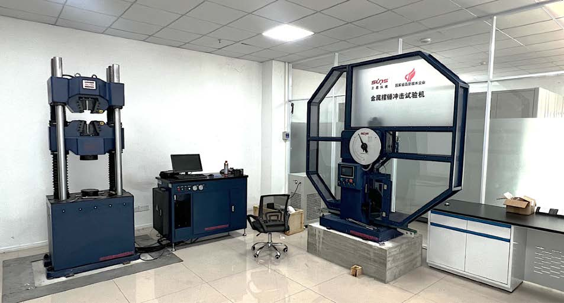
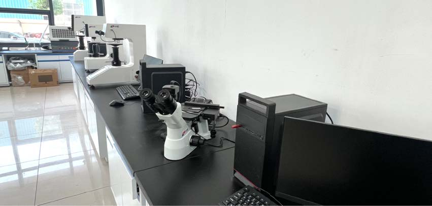
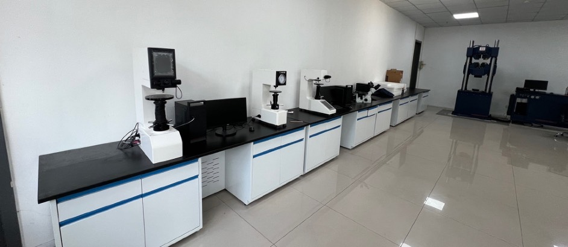

Modern Group's New Testing Lab contains all standard equipment to examine and test materials through analysis to destruction, including high power microscopes, steel analyzers, chemical and mechanical testing machines, Impact Test Machine and Tensile Test Equipment.
The laboratory operates under strict quality protocols aligned with ASME Section V, ASTM, and ISO standards. All tests are performed by qualified technicians with full traceability maintained from raw material receipt through final product release.



Charpy V-notch impact testing to verify material toughness at specified temperatures per ASTM E23 / EN ISO 148-1.
Universal tensile testing machines for determining yield strength, tensile strength, elongation, and reduction of area per ASTM E8.
Our NDT department is equipped to perform all standard inspection methods required by ASME codes and international standards for pressure equipment.
Digital radiography (DR) and conventional film RT for volumetric examination of butt welds on pressure vessels, headers, nozzles, and piping. Interpretation by Level II certified personnel per ASME Sec. V Article 2.
Wet fluorescent magnetic particle (WFMT) and dry powder MT for detecting surface and near-surface discontinuities in ferromagnetic materials. Used extensively for weld surface inspection and final vessel checkout.
Fluorescent and visible-dye penetrant testing for detection of surface-breaking flaws in non-magnetic materials including austenitic stainless steels, nickel alloys, and aluminum components.
Pulse-echo UT for thickness measurement, lamination checks on plates, and weld volumetric examination. Phased array ultrasonic (PAUT) capability available for complex geometry inspections.
Comprehensive visual examination of all welds, fit-up checks, and dimensional verification against approved drawings. Weld contour gauges, fillet gauges, and precision measuring tools used throughout production.
In-house capability for hydrostatic pressure testing of vessels, headers, and modules at pressures up to design requirements. Pneumatic testing also available where specified. Certified test pumps and calibrated pressure gauges with traceable calibration certificates.
Positive Material Identification (PMI) using portable XRF spectrometer for verifying alloy composition of incoming materials, semi-finished parts, and finished components before shipment. Ensures full compliance with material specifications (ASTM, ASME).
Tensile testing, impact testing (Charpy V-notch), hardness testing, and bend testing performed on procedure qualification specimens (PQR) and production coupon samples as required by ASME Section IX and project WPS requirements.
Microstructural evaluation of welded joints and heat-affected zones for procedure qualification and failure analysis. Grain structure assessment, ferrite content measurement for duplex materials, and intergranular corrosion testing when required.
Mill certificates verified, PMI spot-checks, visual inspection of plate/tube surfaces upon receipt.
Welding parameters monitored, fit-up inspections, interim NDT at hold points per ITP schedule.
Complete RT/MT/PT/UT as specified, dimensional survey, pressure test execution witnessed by client/TPI.
Data books compiled, MTR packages finalized, nameplate stamped, certificate of conformance issued.